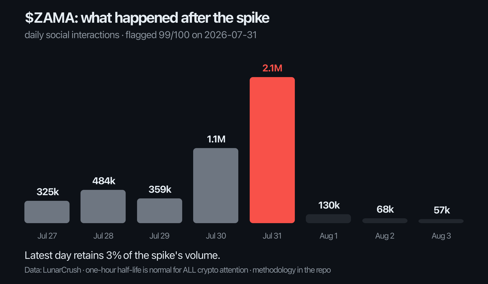

| Metric | Value | Read |
|---|---|---|
| Attention vs 30d baseline (event day) | ~6x (2.1M interactions vs ~350k norm) | major spike |
| Spam volume vs the token's own norm | 2.0x | fresh wave |
| Creator concentration (top 3 share) | 98% of interactions | crowd costume |
| Sentiment | 100 (unanimous positive) | uniformity tell |
| Price response (spike day, close-to-close) | $0.051 to $0.051 | none |
| Attention floor after event vs before | ~60-80k/day vs ~350k/day | crater, not residue |
Attention decay itself proves nothing: my published half-life study found ALL crypto attention dies fast, real or rented (one-hour median half-life from the peak). The diagnostic isn't the fall, it's the floor. Genuine adoption events leave the attention baseline durably higher: across 5,000+ historical spikes, the median event settles about 30% above the prior floor. This event left the token's attention below where it started. Whoever arrived on July 31 did not stay, did not follow, and did not come back.

Post-level data measures amplification, not its source. A paid bot campaign, third-party engagement farming, coordinated advocacy, and algorithmic amplification can produce overlapping signatures; this report claims none of them specifically. It also says nothing about the project's technology or team, which may be excellent: conversation authenticity and product quality are independent axes. A real catalyst and rented amplification can co-occur, and the evidence here is consistent with that combination. Payment does not influence conclusions; this specimen was unpaid and published because the event was publicly notable.
Every number above comes from the same pipeline behind the daily public verdicts: the detector flagged this event live on July 31, the follow-up chart was generated automatically three days later, and the residue benchmark comes from published research across 5,000+ historical spikes. Paid reports include a reproduction appendix so you can verify every figure.